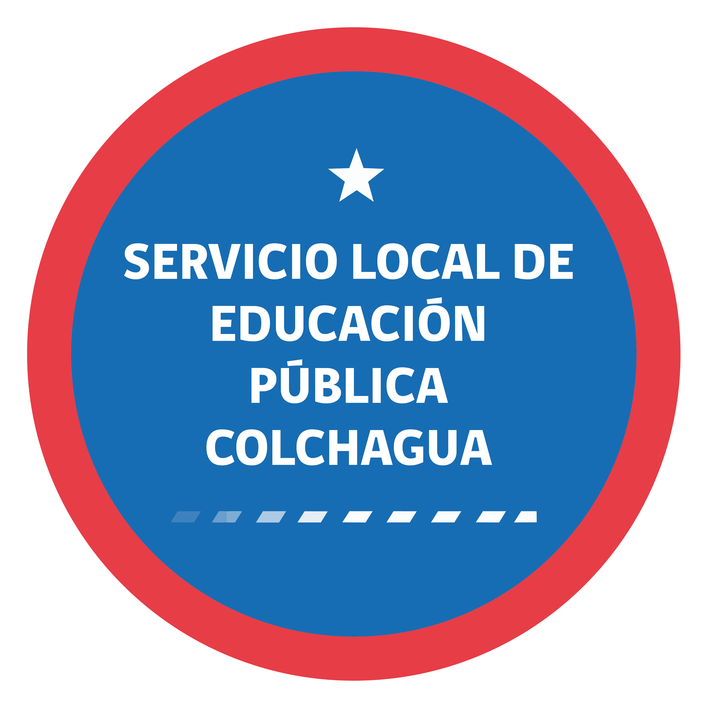

EDUCACIÓN PÚBLICA
Colchagua
Portal de
Planificación.
seguir avances
y decidir
con evidencia.
 SLEP COLCHAGUA
SLEP COLCHAGUA¿De qué vamos a hablar?
SLEP COLCHAGUAEl seguimiento institucional vivía
repartido en planillas sueltas.
- Instrumentos institucionales dispersos en varios Excel y carpetas.
- Avances cargados a mano, sin trazabilidad por corte.
- Difícil saber, en un día cualquiera, el cumplimiento real.
- Aprobaciones, observaciones y evidencias por correo.
- El reporte ejecutivo se rearmaba cada vez desde cero.
SLEP COLCHAGUAPara qué existe esta plataforma.
Cuatro propósitos guían cada módulo del portal.
Centralizar instrumentos
Concentrar en un solo lugar los instrumentos institucionales del SLEP y todos sus indicadores.
Registrar avances por corte
Que cada responsable pueda cargar su avance de manera ordenada, con fecha de corte y evidencia.
Visualizar cumplimiento
Mostrar el estado del servicio con semáforos, porcentajes y un dashboard ejecutivo, sin armar reportes a mano.
Aprobar u observar
Permitir que la dirección revise y devuelva con observaciones, dejando la traza dentro del mismo sistema.
SLEP COLCHAGUATres perfiles, una sola fuente de verdad.
Administrador
Configura instrumentos, indicadores, cortes y usuarios. Aprueba u observa avances. Vista total.
Director ejecutivo
Revisa avances, aprueba u observa, mira indicadores ejecutivos y el cumplimiento global del servicio.
Subdirector
Carga avances de los indicadores de los que es responsable. Crea acciones operativas de su área.
SLEP COLCHAGUATres capas que conversan entre sí.
El usuario interactúa con una capa moderna, mientras el dato vive ordenado en el ecosistema Google del servicio.
SLEP COLCHAGUAPantallas y formularios donde el equipo inicia sesión, consulta y carga avances.
- Login con cuenta institucional Google.
- Validación en pantalla antes de enviar.
- Dashboard, cortes y seguimiento por rol.
autenticada
lista para mostrar
Recibe cada solicitud, identifica al usuario y aplica reglas antes de leer o guardar.
- Valida token, correo institucional y rol del usuario.
- Controla permisos según perfil.
- Calcula estados, porcentajes y aprobaciones.
escritura
evidencias
El dato no sale del ecosistema del servicio: se ordena en Sheets y se respalda en Drive.
SLEP COLCHAGUASeis módulos conectados entre sí.
Dashboard
Tarjetas por instrumento, KPIs ejecutivos, semáforos, comparativa y próximos cortes.
Indicadores
Vista global de indicadores con filtros por tipo, responsable e instrumento.
Instrumento detalle
Tabla por corte con avances, aprobación y observaciones del director ejecutivo.
Ingreso de avance
Formulario que calcula porcentaje y semáforo en vivo, con validaciones de negocio.
Gantt anual
Calendario de cortes por instrumento, con métricas por corte y plazos resaltados.
Acciones
Capa operativa por indicador: tareas, evidencias y bitácora del equipo responsable.
SLEP COLCHAGUAPor qué Google Apps Script
y no una base de datos tradicional.
SLEP COLCHAGUAApps Script + Sheets
vs. base de datos tradicional.
Comparación ejecutiva de costo, operación, trazabilidad y escalabilidad para el contexto real del SLEP.
| Criterio | Apps Script + Sheets (elegido) | Base de datos tradicional |
|---|---|---|
| Costo mensual | Gratuito dentro del Workspace | Servidor + base de datos pagados |
| Ecosistema | Dentro del entorno institucional Google | Servicio externo separado |
| Autenticación | Cuenta institucional ya existente | Usuarios y contraseñas a gestionar aparte |
| Datos visibles | Sheets se leen y exportan como planilla | Requiere herramientas adicionales |
| Mantenimiento | Sin servidores que administrar | Requiere monitoreo y respaldos propios |
| Velocidad de cambios | Despliegue rápido desde el mismo proyecto | Pipeline adicional de despliegue |
| Volumen muy alto | Bueno hasta cierto volumen | Mejor a escala masiva |
SLEP COLCHAGUANo es solo una herramienta técnica. Es una decisión institucional.
La plataforma se diseñó para convivir con la operación real del servicio, no para exigir un cambio cultural imposible.
Vive dentro del Workspace que el servicio ya usa.
No obliga a introducir un proveedor nuevo, ni una operación paralela de usuarios, respaldos o permisos fuera del entorno institucional.
Resuelve una necesidad pública sin sumar infraestructura pagada.
La decisión técnica cuida recursos, evita dependencia externa y mantiene el foco en gestión, seguimiento y mejora del servicio.
El dato sigue siendo visible, exportable y auditable.
La información no se encierra en una caja negra: queda disponible para control interno, revisión directiva y trabajo cotidiano de las áreas.
SLEP COLCHAGUADe un clic del usuario,
a una fila en la planilla.
Ingresa con su cuenta institucional y carga un avance desde el formulario.
Valida en pantalla y llama al backend mediante una función central llamada callApi().
Verifica el token, revisa el rol, aplica reglas de negocio y decide qué hacer.
Escribe la fila en la hoja correspondiente y guarda evidencias en Drive.
Cada llamada incluye el token Google del usuario. El backend rechaza correos no autorizados o roles que no corresponden a la acción.
El backend guarda en caché las lecturas frecuentes (dashboard, gantt, indicadores) para responder rápido sin recalcular todo.
SLEP COLCHAGUAEl stack, en lenguaje claro.
Construye las pantallas y reacciona a lo que el usuario hace.
Define apariencia, espaciado y colores de forma consistente.
Coordina las llamadas al backend y mantiene la UI fresca.
Dibuja los gráficos comparativos y de cumplimiento.
Aplica reglas y conecta el frontend con los datos.
Cada hoja funciona como tabla del sistema.
Guarda los respaldos cargados por los responsables.
Login con cuenta institucional del servicio.
SLEP COLCHAGUAEl taller del portal.
Herramientas que el equipo usa para escribir, revisar y guardar el código del sistema.
Donde se escribe, navega y prueba el código del portal. Liviano, gratuito y estándar de la industria.
Sugiere y completa código dentro de VS Code. Acelera tareas repetitivas y mantiene consistencia.
Apoyo para razonar, refactorizar y revisar piezas más complejas del backend y la UI.
Almacena el historial de cambios. Permite trabajar ordenadamente, revertir errores y conectar con el despliegue.
SLEP COLCHAGUACómo viaja un cambio
desde el equipo hasta producción.
SLEP COLCHAGUAEl portal se publica
en Vercel, conectado a GitHub.
- Vercel está conectado directamente al repositorio del portal en GitHub.
- Cada vez que se sube un cambio, Vercel compila el sitio y lo deja disponible para el usuario final.
- Si una versión presenta problemas, se puede volver a una anterior con un clic.
- Permite previsualizar cambios antes de publicarlos al equipo completo.
- Despliegue automático, sin pasos manuales propensos a error.
- HTTPS y rendimiento global incluidos por defecto.
- Plan gratuito alcanza para el uso institucional actual.
- Conexión directa con el flujo de GitHub que ya usamos.
SLEP COLCHAGUAEl dato vive donde ya estaba protegido.
Solo entran correos del dominio del SLEP autorizados explícitamente en la hoja de usuarios.
Cada acción del backend verifica el rol del usuario antes de permitir crear, editar o aprobar.
Los datos y archivos quedan en el entorno Google del servicio, con su respaldo, control y trazabilidad.
SLEP COLCHAGUADónde estamos hoy.
- Login con cuenta Google institucional.
- Dashboard ejecutivo con KPIs, semáforos y exportación.
- Vista global de indicadores con filtros.
- Carga, aprobación y observación de avances por corte.
- Gantt anual con plazos resaltados.
- Módulo Acciones con bitácora y evidencias en Drive.
- Panel de administración para mantener instrumentos, indicadores y usuarios.
- Fase 5 — Correos automáticos de recordatorio antes de cada corte.
- Fase 6 — Pruebas finales por rol y estabilización del despliegue.
- Edición visual completa de acciones desde la interfaz.
- Dominio personalizado del SLEP para el portal en producción.
- Capacitación operativa al equipo del servicio.
SLEP COLCHAGUAMenos búsqueda. Menos reconstrucción. Más decisión con evidencia.
El valor del portal no está solo en la pantalla: está en cómo cambia la rutina de trabajo del servicio.
Cargan avances en un flujo único y trazable.
Ya no dependen de correos, carpetas sueltas o planillas paralelas para dejar registro del avance de cada indicador.
Revisa, observa y aprueba desde una vista consolidada.
La conversación ya no parte preguntando dónde está el dato, sino usando el dato para priorizar, corregir y decidir.
Llega a cada corte con información lista para comunicar.
El reporte deja de reconstruirse desde cero y pasa a salir del mismo sistema que sostiene la operación diaria.
SLEP COLCHAGUAconstruida sobre su propio ecosistema Google,
sin sumar costos ni proveedores externos.
EDUCACIÓN PÚBLICA
Colchagua
Decidir con
evidencia.
El portal convierte el seguimiento institucional en una rutina visible, compartida y sostenible dentro del propio ecosistema del servicio.